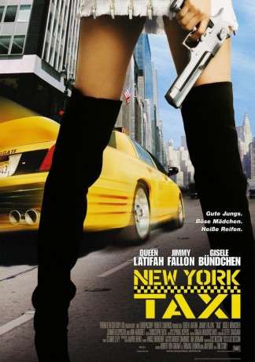
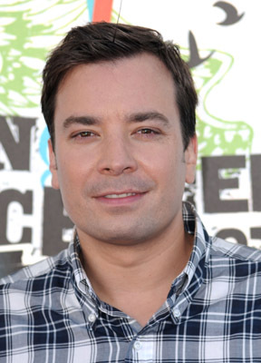
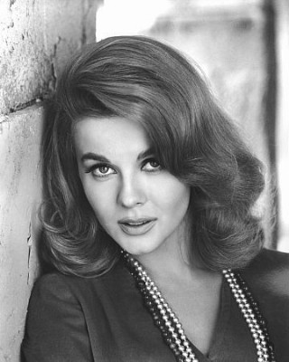
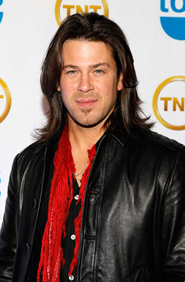
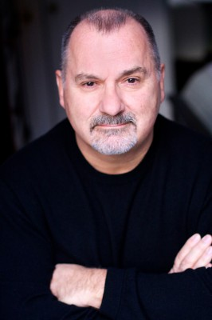
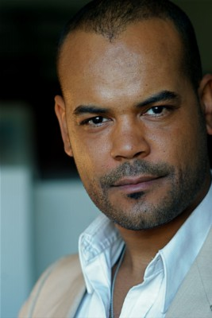
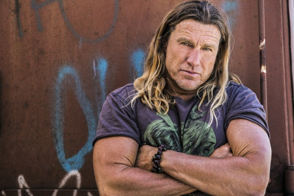

#205 Taxi - New York Taxi
Alternativ: Taxi
 
 IMDB-Wertung: 4.5 / 10
IMDB-Wertung: 4.5 / 10  Metascore: 27
Metascore: 27 
Geschwindigkeits-Fan Belle ist mit ihrem getunten Super-Taxi New Yorks schnellste Taxifahrerin. Undercover-Cop Andy ist der unfähigste Polizist und Auto-Fahrer der Stadt. Als vor seiner Nase vier attraktive Bankräuberinnen zuschlagen, rekrutiert Andy Belle, um die heißen Bräute zu verfolgen. Eine schräge und hochtourige Taxifahrt durch New York City beginnt, denn die Damen erweisen sich als sehr clever und gefährlich...
Jahr: 2004
Dauer: 97 Minuten
FSK: 6
Land: USA Studio: 20th Century FoxTonspuren:
Untertitel:
Auflösung: 720p (1280×544) Größe: 3358 MB
Genre: Action, Thriller, Komödie, Krimi
Regisseur: Tim Story
Drehbuch: Luc Besson, Robert Ben Garant, Thomas Lennon, Jim Kouf
Soundtrack: Christophe Beck, Tim Boland
Darsteller:
 Queen Latifah als Isabelle 'Belle' Williams
Queen Latifah als Isabelle 'Belle' Williams-  Jimmy Fallon als Andrew 'Andy' Washburn
- Henry Simmons als Jesse
 Jennifer Esposito als Lt. Marta Robbins
Jennifer Esposito als Lt. Marta Robbins- Gisele Bündchen als Vanessa
- Ana Cristina de Oliveira als Redhead
- Ingrid Vandebosch als Third Robber
-  Ann-Margret als Mrs. Washburn
-  Christian Kane als Agent Mullins
 Boris McGiver als Franklin
Boris McGiver als Franklin Adrian Martinez als Brasilian Man
Adrian Martinez als Brasilian Man-  Joe Lisi als Mr. Scalia
- Bryna Weiss als Mrs. Scalia
- GQ als Stopwatch Messenger
- Joey Diaz als Freddy
 Rick Overton als Man at Taxi Convention
Rick Overton als Man at Taxi Convention John Rothman als Business Man
John Rothman als Business Man- Herman Chavez als Undercover Domino Player
 Amanda Anka als Officer
Amanda Anka als Officer- John Duerler als Uniformed Cop
 Patton Oswalt als Clerk at Inpound Office
Patton Oswalt als Clerk at Inpound Office- I.N. Sierros als Fat Cop
- William Cote als Cop #1 at Airport
 Riley G. Matthews Jr. als Cop #2 at Airport
Riley G. Matthews Jr. als Cop #2 at Airport Adam LeFevre als Big Cop
Adam LeFevre als Big Cop- Kevin Carolan als Cop at Bank #3
 Edward Conna als Lou's Garage Cop
Edward Conna als Lou's Garage Cop-  Ramon Fernandez als Messenger #2
 John Krasinski als Messenger #3
John Krasinski als Messenger #3- Jay Spadaro als Bodega Owner
- Shirell Ferguson-Coleman als Nurse
- Nashawn Kearse als Cop in Harlem
- Chris Brandt als Jeff Gordon Pit Crew , uncredited
- Gelbert Coloma als Thai Detective , uncredited
- Dita de Leon als Detective , uncredited
- Jeff Gordon als Himself , uncredited
- Frank Hopf als Uniformed Cop , uncredited
-  Mark Kubr als Drug Man , uncredited
- Jonathan Latroy als Belle Pit Crew , uncredited
- LeeAnn Powers als DMV clerk , uncredited
- Marty Eli Schwartz als Cop at Roadblock , uncredited
- Heather Sullivan als Bank Employee , uncredited
- Magali Amadei als Fourth Robber
- Mike Santana als Young Dealer
- Lou Torres als Sweaty Dealer
- Sixto Ramos als Twitchy Dealer
- Mario Roberts als Third Dealer
- Jamie Mahoney als Kid
- Earl Schuman als Old Janitor
- Victor Isaac als Messenger #1
Datei: X:\6-Hexalogie(A-Z)\Taxi\Taxi - New York Taxi (2004, FSK6, 1280x544).mkv seit 14.02.2015
Festplatte: HD Collection-3(N-Z)-6(A-Z)
 Es gibt insgesamt 9 Filme in der Gruppe '6-Hexalogie(A-Z)\Taxi'
Es gibt insgesamt 9 Filme in der Gruppe '6-Hexalogie(A-Z)\Taxi'